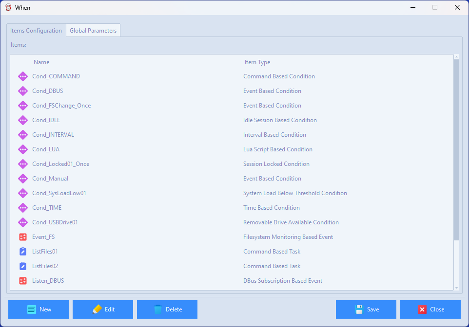
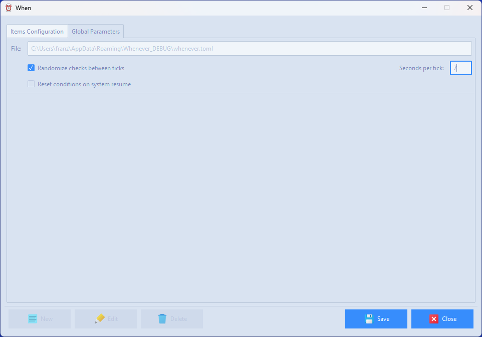

Main Configuration Form
The Main Configuration Form provides access to all item editors that are available for the hosting platform.

This form allows to review, edit, remove, and create items in the current configuration file using the main pane, as well as to modify the global, scheduler related parameters

in a separate panel. The configuration file path is shown in the top part of the globals subform, for reference, and cannot be altered: this path, based on the application data directory, ensures that the same configuration file can be used with either When or whenever_tray as the resident frontend (or wrapper) for the actual scheduler, assuming that the base directory is not altered via the specific CLI option.
Edit Items
An item can be edited by selecting its name row in the Current Items list, and then clicking on the Edit… button. This opens the appropriate item editor, displaying all the actual values for the selected item, in order to let the user modify them according to his needs or requirements.
Create Items
By clicking the New… button, a dialog will pop up asking which type of item has to be created: after selecting it and clicking OK the appropriate editor opens for the desired item type. Note that mandatory parameters are set with default values: of course such values can be modified to suit the user’s preferences. Item creation forms are, other than this, in no way different from the forms used to edit existing item parameters. These forms are specifically described throughout the documentation.
Remove Items
Just clicking the Remove button after selecting the item that has to be deleted will actually remove it from the configuration file, obviously after prompting for confirmation.
Modify Scheduler Parameters
The global scheduler related parameters that are avaiable through this form are the following:
Randomize checks within ticks: whether or not the actual execution of tests for each condition (excluding those that strictly depend on time) have to be performed at random instants within the tick interval or at the exact time when the interval has actually passed;
Tick interval: the amount of seconds that the scheduler will wait between subsequent checks that the defined, active conditions are verified: the default value is 5 seconds, which is actually frequent enough to ensure a quick reaction to external events;
Reset conditions on system resume: when set, every time the workstation wakes up from sleep, When resets the inner status of condition checks, which in fact resembles, from an operational point of view, a fresh start.
The first option, if checked, allows the scheduler to try to run tests for different conditions at a random instant within the interval between ticks. This allows to avoid running all the condition tests at the same time, which could in certain cases cause a significant load on the local machine. Unless there are specific reasons not to, it is advisable to check this option.
Note
Even though condition reset on system resume is a configuration option that is on by default, it is only applied the first time that the configuration is saved and then loaded or reloaded. This means that, if the user has a configuration file generated by a previous version of When that did not yet support this feature, the option will still be turned off until the configuration is saved and the check box in the UI is checked.
Reload Configuration
When the application has been launched as a resident frontend for a live instance of whenever, this form also shows a Reload button which can be used to reload the configuration to the scheduler: only modified items are affected and will be updated and reset.
Warning
Only items are reloaded, the global scheduler parameters do not change while the scheduler is running and will be applied at the next start.
Exiting
The Close button has different behaviors depending on how the main configuration form was entered: if a configuration-only session was launched using the config command, then the button allows for completely leaving the application. If the form was launched through the Configurator… entry in the system tray menu, the resident part of When remains active, and only the configuration utility is exited. Please note that writing a new configuration file will not cause the main scheduler to automatically reload it.
Also note that, if anything had changed since the configuration file was last saved, the configuration form will ask anyway to save it again – no matter whether it had been launched via the config command or via the system tray menu.